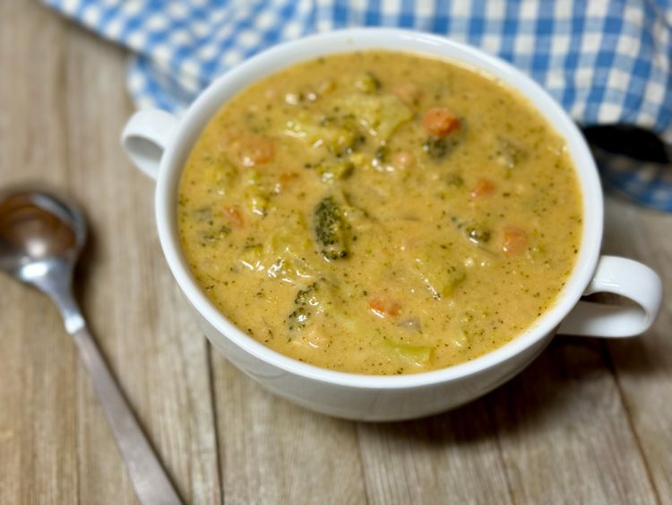

High Protein Broccoli Cheddar Soup
Home

"Description"
This creamy high protein broccoli Cheddar soup is packed full of veggies and gets its creaminess—and extra protein—from beans and cottage cheese. The soup is partially blended for a nice, thick base.
"Ingridients"
- 2 table spoons butter
- 1 yellow onion, chopped
- i large carrot, chopped
- 1 stalk celery, chopped
- 2 cloves garlic, minced
- 1 (15.5 ounce) can navy beans, drained
- 4 cups chicken broth
- 1 1/2 pounds broccoli, chopped
teaspoon paprika
- 1 teaspoon salt
- 1/2 teaspoon freshly ground black pepper
- 1 cup full-fat cottage cheese (small or large curd)
- 1 1/2 cups shredded cheddar cheese
"STEPS"
- Melt butter in a large stockpot over medium heat. Add onion, carrot, and celery. Cook for 8 minutes. Add garlic and cook 2 minutes more. Add beans, broth, broccoli, paprika, salt, and pepper. Simmer for 10 minutes.
- Turn heat off; ladle about 1 1/2 cups of soup into a blender. Let cool for 10 minutes. This cooling step is important for blending cottage cheese.
- Add cottage cheese to blender; blend until smooth. Return mixture to the stockpot; turn heat back on to low. Add Cheddar cheese and stir until melted and soup is thickened. Ladle into bowls and serve.